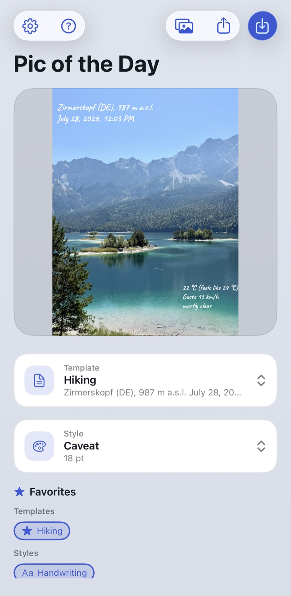

iPhone app
Every photo knows where you were.
A holiday snapshot turns into a postcard that captions itself: place, date, weather, altitude and sun position come straight out of the photo.

How the text lands in the photo
Zirmerskopf (DE), 987 m a.s.l. July 28, 2026, 12:03 PM, 22 °C, mostly clear
Free, no ads, no account.
iPhone, iOS 17 and up.
Your photo in five seconds.
What the app fills in for you.
Templates instead of typing
Write the text once with placeholders, then the app fills it in again for every photo. 80 fields are ready to use: address, weather at the time of capture, camera data, moon phase, nearest peak.
Styles that stay put
A style you set up once and never touch again. 135 fonts and 23 backdrop shapes are included, all of it offline on the device.
Up to 20 photos in one go
Batch mode fetches each photo's own data while the style stays the same for all of them. A day of hiking is captioned in a single pass.
What you see is what gets saved
In the fullscreen editor every text field sits exactly where you drag, rotate and scale it. The preview is the result, pixel for pixel.
Your photos stay on your iPhone.
- No upload. Images are processed on the device only. There is no server they could end up on.
- Your original stays untouched. Saving always creates a new photo next to the old one, never on top of it.
- Only coordinates leave the device, and only to look up weather, place names and the nearest peak.
- No account, no trackers, no ads. When you share an image, the GPS data can be stripped out beforehand.
Ready for your first captioned photo?
Download on the App StoreFree, no ads, no account. iPhone, iOS 17 and up.